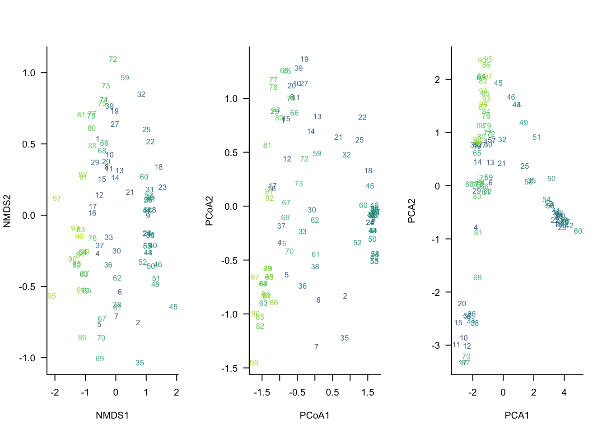
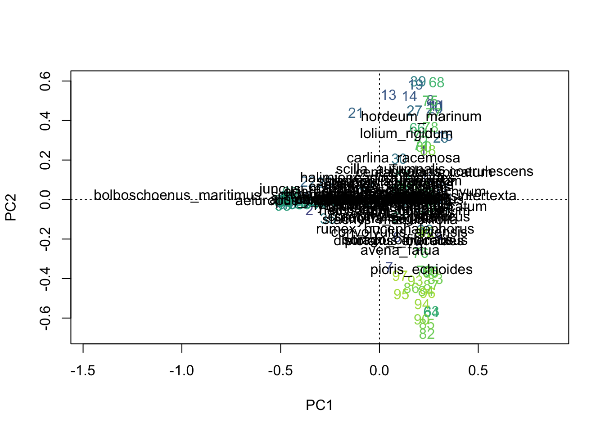
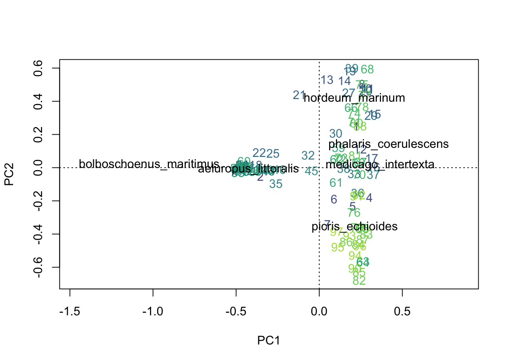
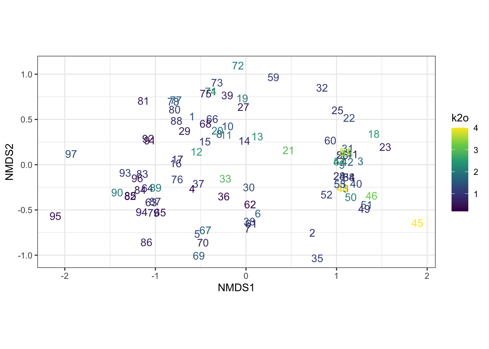
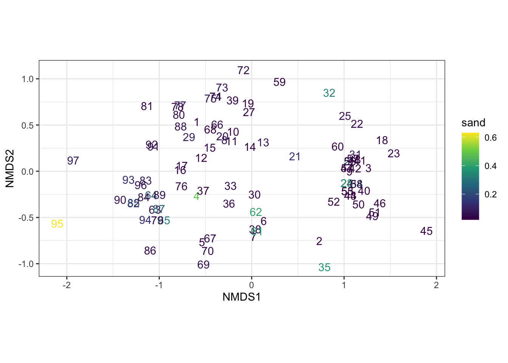
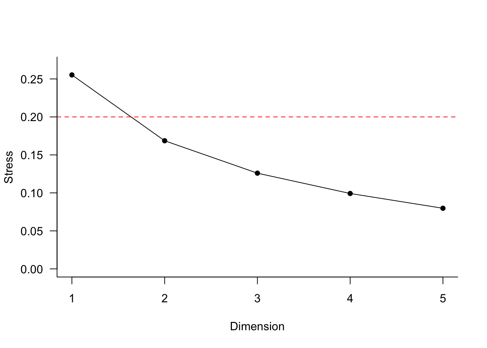

Chapter 8 Ordination (unconstrained)
How best to order sites by dissimilarities of community compositions?
TL;DR: Ordination orders sites according to community compositions. Ordination distances indicate compositional dissimilarities. Nearby points are more compositionally similar than distant points.
Unconstrained ordination is a set of techniques that summarize patterns in a species abundance matrix without using any environmental variables or prior hypotheses about what drives those patterns. The ordination arranges sites (and sometimes species) in a low-dimensional space so that sites with similar community composition occur close together and dissimilar sites occur farther apart. In community ecology, methods such as NMDS, PCoA, and PCA are commonly used as unconstrained ordinations to explore major gradients in species composition and identify natural patterns in the data before relating them to environmental factors.
8.1 The three major unconstrained ordination methods
- Non-metric Multidimensional Scaling - a rank-based method that focuses on preserving the order of dissimilarities rather than their exact values. NMDS is particularly useful for ecological data because it can handle non-linear relationships and is robust to outliers.
- Principal Coordinates Analysis (PCoA) - a distance-based method that can use any dissimilarity measure (e.g., Bray-Curtis, Jaccard). PCoA is more flexible than PCA and can handle non-Euclidean distances, making it suitable for ecological data that often violate the assumptions of linearity.
- Principal Components Analysis (PCA) - a linear method that reduces the dimensionality of the data by finding new axes (principal components) that maximize variance. PCA is best suited for continuous data and assumes linear relationships among variables.
Below we briefly show how to perform these three ordination methods in R using the vegan package for NMDS and PCoA, and the base R function prcomp for PCA.
Note that we are using the dissimilarity matrix D calculated in Section 7 - Stepacross adjustment for NMDS and PCoA, while PCA is performed directly on the species abundance matrix spe.
m1 <- metaMDS(D, k=2, maxit=250, try=100, trymax=101, trace=0) # NMDS
m2 <- cmdscale(D, k=2, add=T) # PCoA
m3 <- prcomp(spe) # PCAWe can visualize these results using the ordiplot function in the vegan package for NMDS and PCoA, and the base R plotting functions for PCA.
### Visualizing ordinations
# color vector for plotting
u <- get_palette()
u <- u[1:nrow(spe)]
# compare three kinds of ordination
par(mfrow=c(1,3), bty='l', las=1)
plot(m1$points, type='n', xlab='NMDS1', ylab='NMDS2')
text(m1$points, rownames(m1$points),cex=.8, col=u)
plot(m2$points, type='n', xlab='PCoA1', ylab='PCoA2')
text(m2$points, rownames(m2$points),cex=.8, col=u)
plot(m3$x, type='n', xlab='PCA1', ylab='PCA2')
text(m3$x, rownames(m3$x),cex=.8, col=u)
What do we see here?
All three ordinations identify a similar primary gradient in community composition, separating sites on the left from those on the right. NMDS and PCoA produce very similar configurations because both are based on ecological dissimilarities among sites, whereas PCA uses Euclidean distances on the transformed species matrix and displays a pronounced horseshoe pattern. The similarity among methods increases confidence that the dominant pattern is real, while the differences highlight the assumptions made by each ordination technique.
8.1.0.1 Challenge
Re-rerun the PCA using a Hellinger transformation. What differences do you see in the ordination results?
8.1.1 Using biplots to visalize relationships between species and sites
We can examine both species and sites in the same ordination plot by creating a biplot.
## Redo PCA using vegan::rda
m3_hell <- rda(decostand(spe, "hellinger"))
plot(m3_hell,
display = c("sites", "species"),
type = "n",
scaling = 2)
# sites
text(vegan::scores(m3_hell, display = "sites", scaling = 2),
labels = rownames(spe),
col = u)
# species
text(vegan::scores(m3_hell, display = "species", scaling = 2),
labels = colnames(spe),
col = "black")
A cleaner visual
We can reduce the number of species labels to only those that are most strongly associated with the ordination axes (i.e., have high loadings on the axes).
sp <- vegan::scores(m3_hell, display = "species", scaling = 2)
r <- sqrt(sp[,1]^2 + sp[,2]^2)
keep <- r > quantile(r, 0.9)
plot(m3_hell, type = "n", scaling = 2)
text(m3_hell,
display = "sites",
scaling = 2,
col = u)
text(sp[keep,1],
sp[keep,2],
labels = rownames(sp)[keep],
col = "black")
NOTE: In the biplot, the direction of a species vector can inform you about associations between sites and species. For example, Bolboschoenus maritimus is associated with sites such as 22, 25, and 35 because those sites lie in the same direction as the species vector. The angles between species vectors can also provide information about species associations: species whose vectors point in similar directions tend to occur together, species whose vectors are approximately 90° apart are weakly correlated or largely independent, and species whose vectors point in opposite directions tend to be negatively associated. For example, B. maritimus and Hordeum marinum appear nearly orthogonal in this biplot, suggesting little association between them along the variation represented by PC1 and PC2. However, distances between species in the biplot are not generally interpretable and should not be treated like distances between sites.
Biplot scaling-2 cheatsheet
- Direction of species vectors → association with sites
- Angle between species vectors → approximate correlation among species
- small angle → positive association
- ~90° → little association
- ~180° → negative association
- Length of species vectors → strength of relationship with the displayed axes
- Distances among sites → interpretable
- Distances among species → generally not interpretable
8.1.2 Scaling scores
Scaling determines how site and species scores are displayed on an ordination diagram. The ordination itself is unchanged, but different scaling choices emphasize different ecological relationships, such as distances among sites, correlations among species, or associations between sites and species.
Using vegan::scores(x, scaling = ...):
scaling = 1— focus on sites, scale site scores by \(\lambda_i\)scaling = 2— focus on species, scale species scores by \(\lambda_i\)scaling = 3— symmetric scaling, scale both scores by \(\sqrt{\lambda_i}\)scaling = -1— as above, but forrda()get correlation scoresscaling = -2— forcca()multiply results by \(\sqrt{(1/(1-\lambda_i))}\)scaling = -3— this is Hill’s scalingscaling < 0— forrda()divide species scores by species’ \(\sigma\)scaling = 0— raw scores
…where \(\lambda_i\) is the ith eigenvalue.
8.1.3 Adding environmental information to NMDS plots
We can add environmental information to the ordination plots to explore potential relationships between community composition and environmental gradients by coloring the points by environmental variable values.
Below we do this using ggplot2 to visualize the NMDS results with points colored by three environmental variables: k, k2o, and sand.
# To use ggplot, we need to first make a data.frame with the NMDS scores and the environmental variables
nmds_scores <- as.data.frame(vegan::scores(m1))
nmds_scores$k <- env$k
nmds_scores$k2o <- env$k2o
nmds_scores$sand <- env$sand
ggplot(nmds_scores,
aes(NMDS1, NMDS2, color = k, label = rownames(nmds_scores))) +
geom_text() +
scale_color_viridis_c() +
coord_equal() +
theme_bw()
ggplot(nmds_scores,
aes(NMDS1, NMDS2, color = k2o, label = rownames(nmds_scores))) +
geom_text() +
scale_color_viridis_c() +
coord_equal() +
theme_bw()
ggplot(nmds_scores,
aes(NMDS1, NMDS2, color = sand, label = rownames(nmds_scores))) +
geom_text() +
scale_color_viridis_c() +
coord_equal() +
theme_bw()
8.2 Ordination goodness-of-fit
Ordination methods have intrinsic measures of fit (e.g., stress for NMDS). However, for all methods, a “good” ordination should have a decent correlation between the Euclidean inter-point ordination distances versus the original species dissimilarities used to construct the ordination.
## [1] 0.7622821## [1] 0.6901142## [1] 0.4286785NOTE: In NMDS stress measures how well the NMDS plot represents the original dissimilarities among sites. Lower stress means the distances on the ordination plot are a good representation of the ecological distances in the original data; higher stress means the plot is a poorer representation.
8.3 Dimensionality selection in NMDS
For NMDS, the user must select the number of dimensions a priori. Yet, what is the “best” number of dimensions? We can examine how stress changes as we increment the number of dimensions, and select the dimensionality that balances sufficiently “low” stress with the fewest dimensions.
# define screeplot function, running NMDS for varying 'k' dimensions
scree_nms <- function(D, k=5, ...) {
stress <- rep(NA, k)
for (i in 1:k) {
cat('calculating', i, 'of', k, 'dimensions...\n')
stress[i] <- metaMDS(D, k=i, trace=0, ...)$stress
}
plot(1:k, stress, main='', xlab='Dimension', ylab='Stress',
ylim=c(0, max(stress)*1.05), pch=16, las=1, bty='l')
lines(1:k, stress)
abline(0.20, 0, col='red', lty = 2)
data.matrix(stress)
}
scree <- scree_nms(D, k=5, trymax=10)## calculating 1 of 5 dimensions...
## calculating 2 of 5 dimensions...
## calculating 3 of 5 dimensions...
## calculating 4 of 5 dimensions...
## calculating 5 of 5 dimensions...
## [,1]
## [1,] 0.25527838
## [2,] 0.16862397
## [3,] 0.12596808
## [4,] 0.09922072
## [5,] 0.079757928.4 Brief discussion of PCA vs PCoA vs NMDS
For a species abundance matrix (sites × species), the choice among NMDS, PCoA, and PCA largely comes down to how well they handle the properties of community data:
- many zeros,
- non-normal distributions,
- nonlinear species responses,
- choice of ecological distance measure.
8.4.1 NMDS (Non-metric Multidimensional Scaling)
Advantages
- Uses almost any dissimilarity measure (Bray–Curtis is especially common).
- Works well with zero-heavy community matrices.
- Makes very few assumptions about the data.
- Preserves the rank order of dissimilarities rather than the actual distances.
- Often gives the most ecologically meaningful representation of species abundance data.
For most plant community datasets, NMDS with Bray–Curtis is the default recommendation.
Disadvantages
- Iterative optimization means there is no unique solution.
- Different runs can produce slightly different ordinations.
- Results depend on stress minimization.
- No axes with simple variance-explained interpretations.
- Computationally slower than PCA or PCoA.
Good choice when
- Community data contain many zeros.
- Species responses are likely unimodal.
- You care primarily about ecological gradients.
8.4.2 PCoA (Principal Coordinates Analysis)
Advantages
- Can use virtually any dissimilarity matrix:
- Bray–Curtis
- Jaccard
- Gower
- UniFrac
- etc.
- Axes have eigenvalues that can be interpreted similarly to PCA.
- Often easier to explain than NMDS.
- Deterministic (same answer every time).
Disadvantages
- The quality of the ordination depends strongly on the distance measure.
- Bray–Curtis is not strictly Euclidean, so negative eigenvalues may occur.
- Sensitive to the loss-of-sensitivity problem when many site pairs have no species in common (sometimes addressed with
stepacross()).
Good choice when
- You already have a meaningful dissimilarity matrix.
- You want an eigenvalue-based ordination.
- You want something similar to PCA but based on Bray–Curtis or Jaccard distances.
8.4.3 PCA (Principal Components Analysis)
Advantages
- Fast, simple, and widely understood.
- Axes maximize explained variance.
- Species and sites can be displayed together in a biplot.
- Strong mathematical foundation.
Disadvantages
For raw abundance matrices, PCA is often problematic:
- Uses Euclidean distance implicitly.
- Double zeros contribute to similarity.
- Dominant species can overwhelm patterns.
- Assumes approximately linear responses.
- Rare species contribute little.
Raw species abundance matrices often violate these assumptions badly.
Good choice when
The data have been transformed appropriately:
or
Hellinger-transformed PCA is very common and has strong theoretical support because Euclidean distances on Hellinger-transformed data approximate ecologically meaningful differences among communities.
8.4.4 Comparison summary
If you have a typical vegetation dataset:
| Method | Recommendation |
|---|---|
| Raw abundance matrix | NMDS |
| Bray–Curtis distance matrix | NMDS or PCoA |
| Hellinger-transformed abundance matrix | PCA |
| Mixed species traits | PCoA (often using Gower) |
Rule of thumb
PCA analyzes variance in the species matrix itself and works best after transformations such as Hellinger.
PCoA analyzes a distance matrix and can therefore use ecologically meaningful distances such as Bray–Curtis.
NMDS analyzes the rank order of distances and is usually the most robust choice for sparse community abundance data.
For modern community ecology, the two approaches you will see most often are:
- NMDS on Bray–Curtis distances
- PCA/RDA on Hellinger-transformed abundances